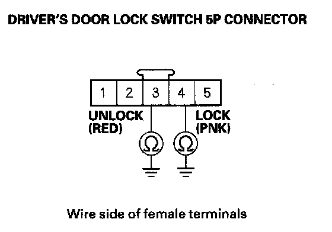

B2180
DTC B2180: Driver's Door LOCK Switch LOCK/UNLOCK Signal ErrorNOTE: If you are troubleshooting multiple DTCs, be sure to follow the instructions in B-CAN System Diagnosis Test Mode A.
1. Clear the DTCs with the HDS.
2. Lock and unlock the driver's door with the driver's door lock switch operation.
3. Check for DTCs with the HDS.
Is DTC B2180 indicated?
YES - Go to step 4.
NO - Intermittent failure, the system is OK at this time. Check for loose or poor connections between the driver's MPCS unit and the driver's door lock switch.
4. With the driver's door lock switch in the neutral position, select the DOOR LOCK from the BODY ELECTRICAL system select menu, and enter the DATA LIST.
5. Check the ON/OFF Information of the Driver's Door Lock Switch (LOCK) and Driver's Door Lock Switch (UNLOCK).
Are both information indicators OFF?
YES - Go to step 6.
NO - Go to step 7.
6. Operate the driver's door lock switch in the LOCK and UNLOCK positions, and check the ON/OFF information of the Driver's Door Lock Switch (LOCK) and Driver's Door LOCK Switch (UNLOCK).
Are both Driver's Door LOCK Switch (LOCK) and Driver's Door LOCK Switch (UNLOCK) information indicators ON at the same time when the door lock switch is in the LOCK or UNLOCK position?
YES - Repair short between the wires.
NO - Replace the driver's MPCS unit.
7. Disconnect the driver's door lock switch 5P connector.
8. Check the ON/OFF information of the Driver's Door Lock Switch (LOCK) and Driver's Door Lock Switch (UNLOCK).
Are both information indicators OFF?
YES - Faulty driver's door lock switch.
NO - Go to step 9.
9. Disconnect the driver's MPCS unit connector A (40P).

10. Check for continuity between body ground and the driver's door lock switch 5P connector No. 3 and No. 4 terminals individually.
Is there continuity?
YES - Repair a short to ground in the wire.
NO - Replace the driver's MPCS unit.